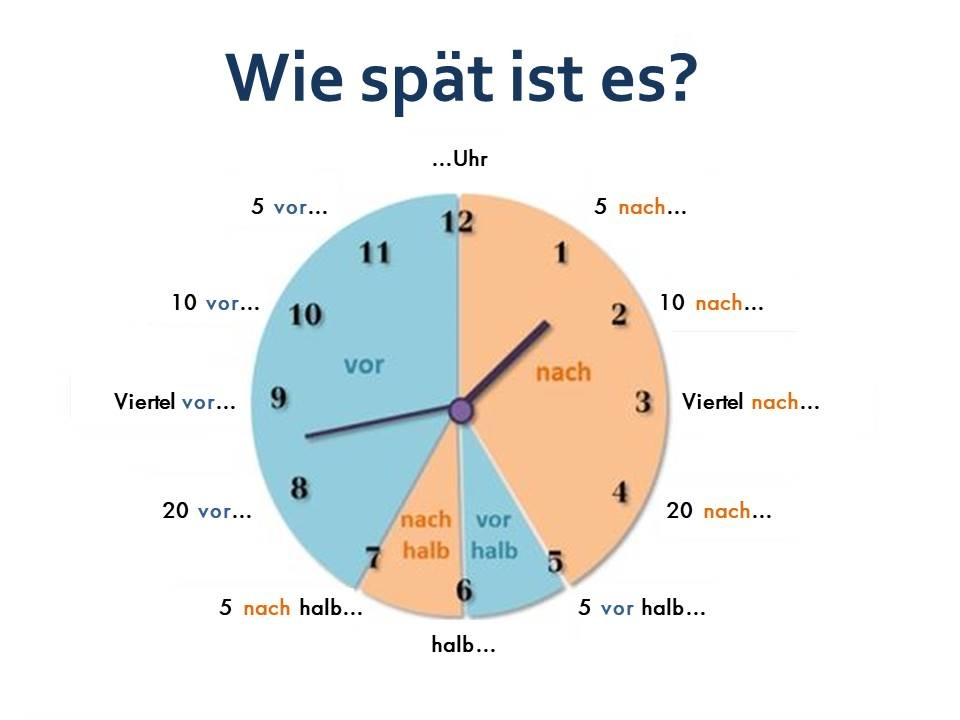

Die Uhrzeit — Ora
„die Uhrzeit” = ora exactă / timpul de pe ceas. Plural: die Uhrzeiten. Articol: die.
Regula de bază: Când spui „Este ora ...” folosești: Es ist ... Uhr.

Es ist ... Uhr (ore fixe)
Es ist ein Uhr. / Es ist zwei Uhr. / ... / Es ist zwölf Uhr.
Întrebări frecvente
| Întrebarea | Traducere |
|---|---|
| Wie spät ist es? | Cât este ceasul? |
| Wie viel Uhr ist es? | Câte ore sunt? / Cât e ora? |
Minute — variante simple și colocviale
Variantă simplă: Es ist [ora] Uhr [minute].
- Es ist drei Uhr fünf. — 3:05
- Es ist sieben Uhr zwanzig. — 7:20
- Es ist zehn Uhr dreißig. — 10:30
Coloquial:
- Es ist Viertel nach zwei. — 2:15
- Es ist halb drei. — 2:30
- Es ist Viertel vor drei. — 2:45
Partiționarea zilei (pentru claritate)
| Expresie | Traducere | Interval |
|---|---|---|
| am Morgen | dimineața | 05:00 – 10:00 |
| am Vormittag | înainte de prânz | 10:00 – 12:00 |
| am Mittag | la prânz | 12:00 – 13:00 |
| am Nachmittag | după-amiaza | 13:00 – 17:00 |
| am Abend | seara | 17:00 – 22:00 |
| in der Nacht | noaptea | 22:00 – 05:00 |
Expresii utile și prepoziția um
- Ich stehe um sieben Uhr auf. — Mă trezesc la 7.
- Der Kurs beginnt um neun Uhr. — Cursul începe la 9.
DIE BEGRÜSSUNGEN (Saluturi legate de oră)
| Salut | Traducere | Interval |
|---|---|---|
| Guten Morgen! | Bună dimineața! | 05:00 – 11:00 |
| Guten Tag! | Bună ziua! | 11:00 – 17:00 |
| Guten Abend! | Bună seara! | 17:00 – 22:00 |
| Gute Nacht! | Noapte bună! | 22:00 – 05:00 |